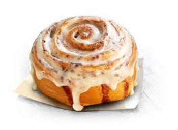

cinnabon

Ingredients:
- milk
- butter
- precise
- water
- egg
- salt
- sugar
- yeast
For stuffing:
- butter
- cinnamon
- Brown sugar
For decoration:
- vanilla
- sugar
- milk
- cream cheese
Directions
In a bowl, mix flour with yeast, sugar, salt, milk, water, egg and butter.
Stir the mixture well until you get a homogeneous dough, then cover the bowl and let the dough ferment for an hour.
Spread the dough on a floured surface, brush it with butter, then sprinkle it with the brown sugar mixture and cinnamon.
Roll the dough and cut it crosswise into medium-sized pieces.
Spread the pieces on a tray greased with butter and let it ferment for 10 minutes.
Put the tray into the oven until the cinnabon is tender and golden, about 30 minutes.
In a bowl, mix cream cheese with butter, powdered sugar, vanilla and milk well.
Pour the sauce on the Cinnabon Roll, then serve it to your family.